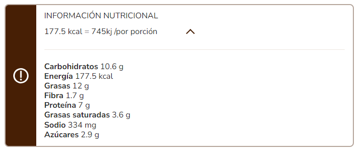

Frittata Recipe

Description
Prepare with this frittata dish, a delicious breakfast or dinner that everyone loves and give it a different touch

Ingredients
- 2 tablespoons vegetable oil (28 g)
- 1 leek onion, chopped, only the white and light green part (380 g)
- 1 clove of garlic, peeled and finely chopped (3 g)
- 4 cups cleaned chard, cut into thin strips (144 g)
- 6 tablespoons of NESTLÉ ® Light MILK CREAM (90 g)
- 4 eggs (200 g)
- 1 teaspoon of NATURISIMO MAGGI® SEASONING (6 g)
- 3 tablespoons seeded and chopped black olives (24 g)
- 4 tablespoons grated low-sodium parmesan (20 g)
Steps
STEP 1 Heat the oven
- Preheat the oven to 200°C (400°F) 30 minutes before preparation.
STEP 2 Grease and heat the pan
- With the help of a kitchen brush or cloth napkin, spread the oil on the bottom and sides of a Teflon frying pan with a metal handle that can be placed in the oven, and heat over high heat for 3 minutes.
STEP 3 Sauté the vegetables
- Add the leek onion and sauté for 3 minutes, add the garlic, chard and cook for 3 minutes or until the chard softens.
STEP 4 Beat the eggs
- Separately, mix the eggs with the NESTLÉ® Light MILK CREAM, 2 tablespoons of cheese, the MAGGI® NATURISIMO SEASONING and beat until well integrated.
STEP 5 Cook the preparation
- Add the egg mixture to the pan with the chard and add the olives, cook without stirring for 5 minutes or until the eggs begin to cook on the sides.
STEP 6 Serve
- Sprinkle with the remaining Parmesan cheese and place in the oven for 10 minutes or until the frittata is golden and cooked, let cool slightly before serving.
